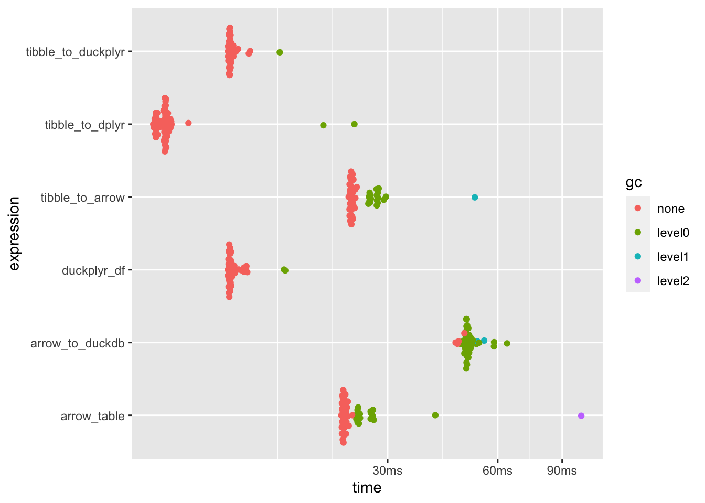

# Load packages
library(here)
library(arrow)
library(dplyr)
# URL for data set persisting in an S3 bucket
url_s3 <- "s3://voltrondata-labs-datasets/nyc-taxi"
# Folder on working directory to save dataset
data_path <- here::here("data/nyc-taxi")
# Connect to data, filter for 10 years, write to disk
arrow::open_dataset(url_s3) |>
dplyr::filter(year %in% 2012:2021) |>
arrow::write_dataset(path = data_path,
partitioning = c("year", "month"))Benchmarking ETL Frameworks for Medium-Sized Data
dplyr
polars
arrow
duckdb
duckplyr
bench
Several months ago, I attended a Big Data with Arrow workshop where I learned more about the Arrow engine, the Parquet file format, and the extensibility of Arrow for data transfer and ETL. In this post, I’ll share several ETL approaches with R and Python including a comparison of runtimes for the various approaches.

Background
Several months ago, I attended a Big Data in R with Arrow workshop where I learned more about the Arrow engine, the Parquet file format, and the extensibility(xxxxxxx) of Arrow for data transfer and ETL. In this post, I’ll share several ETL approaches with R and Python including a comparison of runtimes for the various approaches.
System and Data Overview
Windows and macOS are RAM hogs requiring anywhere from 6-10 GB of RAM. Hopefully your employer has Linux-based VMs running your favorite notebook or IDE since Linux distributions run lean and and don’t require as much RAM as Windows and macOS, but if you’re at home having fun or stuck at work using Windows or macOS, you’ll be unable to load anything near “big data.”
My personal computer is a MacBook Air with 24 GB RAM. Simply running macOS Sonoma 14.1.1 sucks up ~8 GB RAM leaving 16 GB RAM available for anything else. Until recently, if I wanted to load a 40 GB serialized object (like an .rds file) or delimited data set (like a .csv file) into memory using R or Python, my system would have crashed given that I only had 16 GB of free memory. There are tedious ways around this limitation that I won’t cover but Arrow introduces a language-agnostic, larger-than-memory engine for data processing that brings “big data” processing closer to reality on small systems like my MacBook Air.
To be clear, I’m not talking about 2020s “big data”… I won’t be benchmarking performance on terabyte- or exabyte(xxxxxxx)-sized data, but I will be showing you how to perform ETL operations on a 40 GB Parquet data set, partitioned by Year and Month (120 individual Parquet files), including information on 1.1 billion NYC taxi rides.
Frameworks In Scope
Many of the frameworks below play nicely with Arrow (if not built on top of the Arrow engine in some way), but below are the various methods that I plan to cover:
- Arrow (Python/R)
- dplyr (R)
- DuckDB (Python/R)
- duckplyr (R)
- Pandas (Python)
- Polars (Python/R)
- Spark (Python/R)
Downloading the Data
The following code chunk will download a 40 GB data set of 1.1 billion NYC taxi rides partitioned over 120 files (by Year and Month). Depending on your internet connection, download time could take several hours for this data set.
CREATE PYTHON AND R CHUNKS
Benchmarking
For benchmarking performance across different approaches, one of my favorite packages is bench. I’ll first create a custom function, run_benchmark(), that will use bench::mark() to compare performance across methods and plot the benchmarking results. The only input into the function will be the number of rows to sample and benchmark.
Benchmarking code for 1 million rows
# Turn off diagnostic output from duckdb
# on data frame materialization
options(duckdb.materialize_message = FALSE)
# Load additional packages
library(tictoc)
library(stringr)
library(duckplyr)
library(ggplot2)
# Manually iterated over the code below to benchmark
# and compare performance on 1 million, 10 million, 100
# million, and 500 million rows
run_benchmark <- function(x) {
tictoc::tic()
nyc_taxi_tibble <- arrow::open_dataset("data/nyc-taxi") |>
dplyr::select(year, passenger_count) |>
dplyr::collect() |>
dplyr::slice_sample(n = x)
nyc_taxi <- nyc_taxi_tibble |>
arrow::as_arrow_table()
nyc_taxi_duckplyr_df <- nyc_taxi_tibble |>
duckplyr::as_duckplyr_df()
bnch <- bench::mark(
min_iterations = 50,
tibble_to_arrow = nyc_taxi_tibble |>
arrow::as_arrow_table() |>
dplyr::filter(passenger_count > 1) |>
dplyr::group_by(year) |>
dplyr::summarise(
all_trips = n(),
shared_trips = sum(passenger_count, na.rm = T)
) |>
dplyr::mutate(pct_shared = shared_trips / all_trips * 100) |>
dplyr::collect(),
tibble_to_duckplyr = nyc_taxi_tibble |>
duckplyr::as_duckplyr_df() |>
duckplyr::filter(passenger_count > 1) |>
duckplyr::summarise(
all_trips = n(),
shared_trips = sum(passenger_count),
.by = year
) |>
duckplyr::mutate(pct_shared = shared_trips / all_trips * 100) |>
duckplyr::collect(),
tibble_to_dplyr = nyc_taxi_tibble |>
dplyr::filter(passenger_count > 1) |>
dplyr::group_by(year) |>
dplyr::summarise(all_trips = n(),
shared_trips = sum(passenger_count, na.rm = T)) |>
dplyr::mutate(pct_shared = shared_trips / all_trips * 100),
arrow_table = nyc_taxi |>
dplyr::filter(passenger_count > 1) |>
dplyr::group_by(year) |>
dplyr::summarise(
all_trips = n(),
shared_trips = sum(passenger_count, na.rm = T)
) |>
dplyr::mutate(pct_shared = shared_trips / all_trips * 100) |>
dplyr::collect(),
arrow_to_duckdb = nyc_taxi |>
arrow::to_duckdb() |>
dplyr::filter(passenger_count > 1) |>
dplyr::group_by(year) |>
dplyr::summarise(
all_trips = n(),
shared_trips = sum(passenger_count, na.rm = T)
) |>
dplyr::mutate(pct_shared = shared_trips / all_trips * 100) |>
dplyr::collect(),
duckplyr_df = nyc_taxi_duckplyr_df |>
duckplyr::filter(passenger_count > 1) |>
duckplyr::summarise(
all_trips = n(),
shared_trips = sum(passenger_count),
.by = year
) |>
duckplyr::mutate(pct_shared = shared_trips / all_trips * 100) |>
duckplyr::collect(),
check = FALSE
)
# Print benchmarking elapsed time
tictoc::toc()
# Plot results
ggplot2::autoplot(bnch)
}
run_benchmark(1000000)24.94 sec elapsed
sessionInfo()
R version 4.3.2 (2023-10-31)
Platform: aarch64-apple-darwin20 (64-bit)
Running under: macOS Sonoma 14.1.1
Matrix products: default
BLAS: /System/Library/Frameworks/Accelerate.framework/Versions/A/Frameworks/vecLib.framework/Versions/A/libBLAS.dylib
LAPACK: /Library/Frameworks/R.framework/Versions/4.3-arm64/Resources/lib/libRlapack.dylib; LAPACK version 3.11.0
locale:
[1] en_US.UTF-8/en_US.UTF-8/en_US.UTF-8/C/en_US.UTF-8/en_US.UTF-8
time zone: America/New_York
tzcode source: internal
attached base packages:
[1] stats graphics grDevices utils datasets methods base
other attached packages:
[1] quarto_1.3 purrr_1.0.2 R6_2.5.1
loaded via a namespace (and not attached):
[1] digest_0.6.33 later_1.3.1 fastmap_1.1.1 xfun_0.41 magrittr_2.0.3
[6] knitr_1.45 htmltools_0.5.7 rmarkdown_2.25 lifecycle_1.0.4 ps_1.7.5
[11] cli_3.6.1 processx_3.8.2 vctrs_0.6.4 compiler_4.3.2 rstudioapi_0.15.0
[16] tools_4.3.2 evaluate_0.23 yaml_2.3.7 Rcpp_1.0.11 rlang_1.1.2
[21] jsonlite_1.8.7